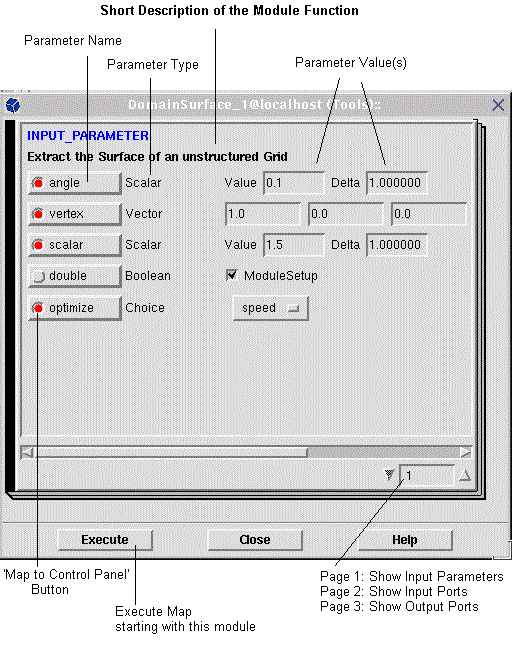
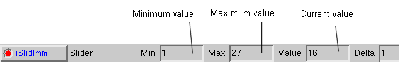
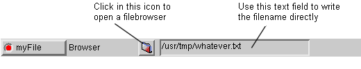
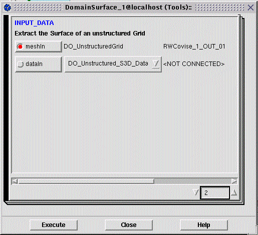
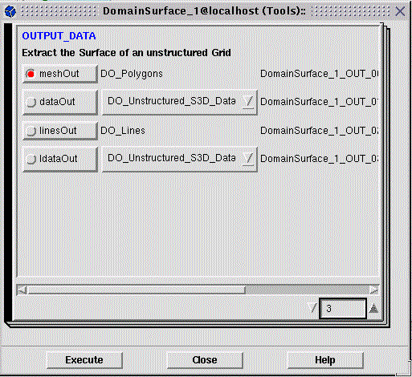

Module Information
(Module Setup)
If you select the book icon of a module,
the ModuleInfo window pops up with page 1 of a book with 1 - 3 pages. This
book contains
-
heading
-
parameter definitions (page 1):
name, type, value
-
input and output data ports (page 2
and 3):
port name, name of geometry object, allowed
data type(s)
(if no parameters exist, next nonempty
page is displayed as page 1)
The heading contains
-
module name
-
host name on which the module is running
-
category to which the module belongs
Each page contains (in addition to the parameter/port
information)
The bottom contains
-
Execute: execute map starting with
this module
Note:
Same function available via
Execute in the menu Further Actions (
Working
with Modules)
Exec icon (  ) in the ControlPanel
(in case of a module with parameter interactor) ) in the ControlPanel
(in case of a module with parameter interactor) |
-
Close: close Module Information window
(and work with Control Panel only)
For each input parameter and for each input/output
port object there is a line in the Module Information window.
Note:
| You work with page 1 (parameters) - page
2 and 3 (input/output ports) are information only! |
Page 1: INPUT_PARAMETER
(see figure below):

A line for a parameter
definition contains
-
parameter name (labeled toggle button)
red button:
parameter definition has a parameter interactor attached in the Control
Panel
blue
parameter name: immediate parameter
label: name of the parameter as defined
in the module description file
-
parameter type
-
parameter value (one or more parameter values
depending on type)
Possible parameter types are
-
Scalar (shown in window above; for
'delta' see ControlPanel, mapping tables)
-
String (self explaining)
-
Vector (shown in window above)
-
Boolean (shown in window above)
-
Choice (shown in window above as choice
menu)
-
Slider (for 'delta' see ControlPanel,
mapping tables)


The toggle buttons in Page 1 of the ModuleSetup
connect this window with the Control Panel. You can
| Map parameters to the Control Panel
as
parameter interactors by clicking the toggle button (button turns
red) - 'attach an interactor' |
| Remove a parameter interactor by
clicking again |
| Parameter is mapped by default:
Button is already red |
for details - especially Appearance Types
- see ControlPanel
Page 2: INPUT_DATA
(see figure below):

A line for an input data port contains
-
input port name (labeled toggle button)
red button:
port is connected
label: name of the port as defined in
the module description file
-
all types of data objects the module can work
with
(scrollable data list, maybe reduced to
1 item only)
-
after connection: name of connected output
data object
Page 3: OUTPUT_DATA
(see figure below):

A line for an output data port contains
-
output port name (labeled toggle button)
red button:
port is connected
label: name of the port as defined in
the module description file
-
all types of data objects the module can generate
(a scrollable data list, maybe reduced
to 1 item only - actual type may depend on current input)
-
name of the data object